|
De esta época imperial conocemos dos
complejos termales, el citado anteriormente de la calle la Reina y la calle Cabillers,
y otro que estaría situado en la calle Salvador.
En este último en mal estado de
conservación, ha
aparecido un mosaico y se ha podido delimitar algunas
estancias como el hipocaustum. Este edificio se data en torno al
siglo II, y se cree que cayo en desuso hacia la segunda mitad del siglo III.
De la
Valentia romana se han localizado cuatro
conjunto termales. En l´ALmonina, en la calle Salvador, en la
calle Micalet y en la plaza de la Reina. |
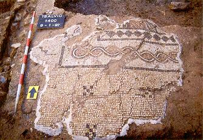
Foto: Cuadernos de difusión
arqueológica del Ayuntamiento de Valencia. |
|
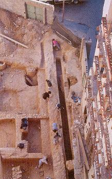
Foto: Cuadernos de difusión
arqueológica del Ayuntamiento de Valencia. |
En el inicio de la calle Quart, a la altura de la
plaza del Tossal, apareció un muro sobre el que
discurría el acueducto romano, pero por su tamaño se cree que también
serviría para delimitar y encauzar por el norte uno de los cauces del
río. En excavaciones realizadas en las
plazas del Negret y de la Reina, se han localizado antiguos
canales
fluviales cegados en época imperial. En la plaza de la Reina se ha supuesto
la existencia de un puente por las dos grandes losas halladas de
2x2m. Supuestamente el contacto con el mar en esta época estaba a 2km de
distancia, a la altura de lo que es hoy la plaza de Honduras, se
haría por la Albufera, que en esta época seria enorme poniendo en contacto
las desembocaduras del Turia y el Xuquer.
En la calle Conde de Trenor, Blanquerias nº 2, detrás
de las Torres dels Serrans, se ha hallado un pequeño puerto fluvial, que se
uso hasta el siglo III. Un muro de silleria de
|
|
Las únicas viviendas halladas en la
ciudad de Valentia han sido domus. Por la entrada norte de la
ciudad llegamos a la domus de Terpsicore, en el Palau de les
Corts, llamada así por el mosaico encontrado.
Por esta vía hacia el sur,
aparece un umbral de acceso y varias habitaciones adyacentes
identificadas en la excavación de la Cárcel de san Vicent
y un mosaico policromo en la calle Cabillers.
La cripta de la cárcel de san Vicente, se hallaba junto al kardo máximo
de la ciudad. Se asocia a una domus del siglo II, de la que se conserva
la pintura mural del dios Mercurio. Según cuenta la tradición popular,
san Vicente, fue encerrado a principios del siglo IV. Posteriormente en
el siglo VI se transformó en un conjunto episcopal visigodo. |
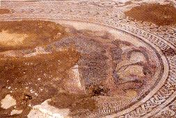
Foto: Cuadernos de difusión
arqueológica del Ayuntamiento de Valencia. |
Más mosaicos que supuestamente
pertenecían a una domus del siglo II, han aparecido en la plaza de la
Pelota y la calle Moratín.
En la parte este, también han
aparecido restos, en los Banys de l´Almirall y en la calle de les Avellanes.
En la parte oeste, en la plaza de
la Reina apareció una estatua de Hermes y un mosaico de Medusas en la calle
Reloj Viejo.
En la parte noreste apareció una
domus, en la calle Sabaters con la plaza de Cisneros. En esta vivienda
han salido a la luz cinco estancias en torno a un pasillo central.
A extramuros de la ciudad, en la
plaza del Negret han aparecido restos de un recinto de producción.
|
En 1963 en las aguas de la playa de
Pinedo, cuatro submarinistas descubrieron una estatua masculina de
bronce. Se fabricó mediante el proceso técnico de la cera perdida,
mide 145 cm. de altura y fue realizada por el método indirecto que
permite su fundición en partes diferenciadas y posteriormente, unirlas
por medio de soldaduras.
La estatua representa la figura de Apolo. La posición doblada del
brazo izquierdo indica que debió apoyarse sobre algún objeto o
instrumento, probablemente la lira o la cítara, el atributo apolíneo
más representativo. Los ojos aparecieron desprovistos de los globos
oculares y los que ahora presenta son fruto de una restauración
moderna.
El
Apolo de Pinedo es una copia romana, de época imperial, del Apolo Delphinios, original realizado por Demetrio de Mileto al final del
siglo II a.e.c. |
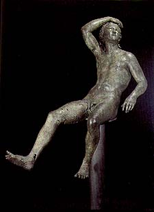 |
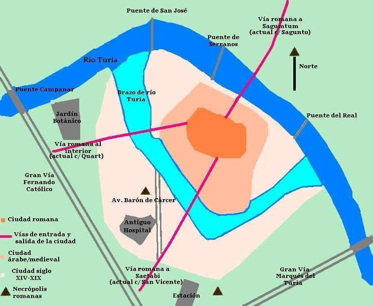
1.- Circo romano. 2.- Santuario de Bellona. 3.- Puerto fluvial en la calle Serranos. 4.- Termas de l´Almoina. 5.- Termas calle Micalet. 6.- Termas de la plaza de la Reina. 7.- Termas calle Salvador. 8.- L´Almoina. Foro romano. 9.- Templo del foro. 10.- Basílica romana. 11.- Santuario de Asklepios. 12.- Km 0. Cruce del cardo y del decumano en
l´Almoina.
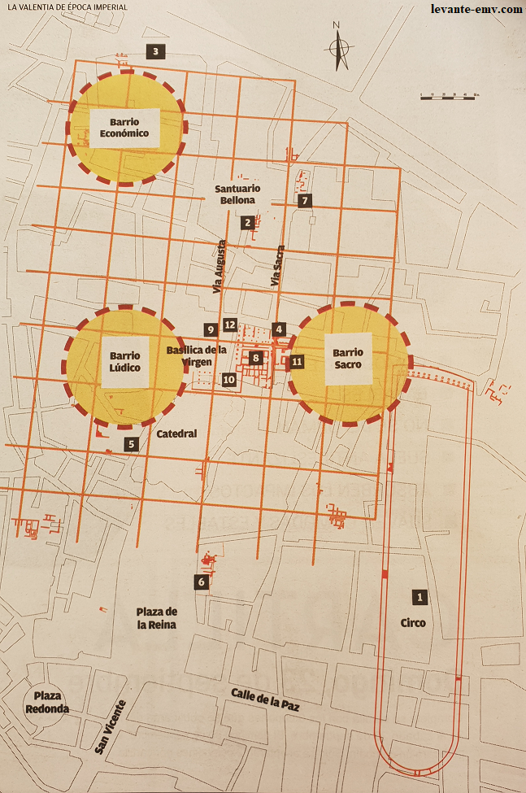
El 20 de diciembre de 2007,
se inauguró el nuevo
Museo de L´Almoina.
|
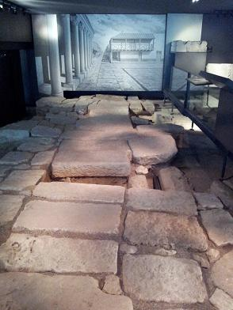 |
 |
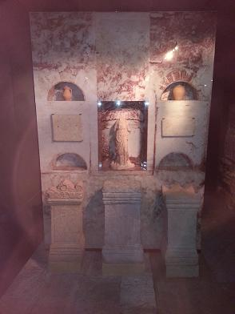 |
|
En las excavaciones del
nuevo Mestalla entre 2007 y 2008, sacaron a la
luz un cruce de caminos romano a cuatro metros
de profundidad.
En marzo de 2008, en
la calle Ruaya aparecieron los restos arqueológicos más antiguos de la
ciudad de Valencia. Los arqueólogos han llegado a la conclusión de que el
subsuelo de la calle Ruaya fue un santuario, una zona sacra, con un pequeño
templo y múltiples pozos donde se realizaban sacrificios y ofrendas.
Se localizó un lote de piezas prehistóricas que demuestran que desde el
Holoceno antiguo, un periodo situado entre 7.000 y 10.000, la zona estaba
habitada. En el siglo IV a.e.c, se asocia a un asentamiento íbero de
carácter rural.
También se ha encontrado restos que podrían datar del siglo III a.e.c,
cerámica ibérica, griega y romana, dos monedas cartaginenses, ánforas de
Cádiz y Túnez, además de balsas de riego, zonas de desperdicios y algún
pozo, que indican que era una zona de huerta habitada y cultivada en esta
época, antes de la fundación romana de la ciudad de Valencia. Se han
descubierto unos pequeños altares "portátiles" para sacrificios rituales y
una deidad de terracota aún por identificar. Se trabaja con la hipótesis de
un centro de culto de época púnica. Estos restos, también se han asociado
con los restos del supuesto campamento de Aníbal a su paso por nuestras
tierras. En febrero de 2013 se cubrió con tierra.
|
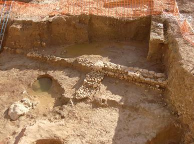 |
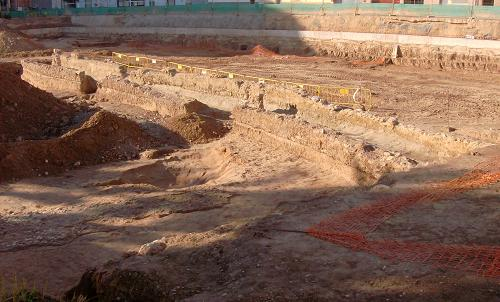 |
|
|
|
|
En febrero de
2009 con las obras de ampliación de la sede de las
Cortes Valencianas,
han hallado restos de un tramo de unos 20 metros la Vía Augusta, así
como restos de viviendas romanas y del sistema de alcantarillado. Se
ha comprobado que el trazado de la Vía Augusta no coincide con el
último tramo de la calle Salvador, como se creía hasta ahora, sino que
es una prolongación en línea recta del tramo hallado en l'Almoina.
Estas casas romanas estarían ubicada extramuros de la muralla romana
de la época republicana.
Con este
descubrimiento, se constata que hubo un ensanche de la ciudad en el
siglo II. Entre los restos encontrados se hay 28 piezas entre jarras,
cerámicas de diferentes épocas -árabe y cristiana-, agujas para el
pelo, una pulsera de cobre y pinturas mural con motivos vegetales
separados por bandas de color rojo. También se halló los restos de una
necrópolis del siglo V, entre los enterramientos hay dos niños metidos
en ánforas. |
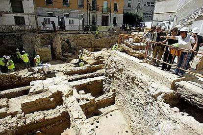 |
En abril de 2009
en la calle Almirante de Valencia, en el palacio del Marques
de Caro, se hallaron los restos de un mosaico de tierra batida decorado con
teselas que forman algunos dibujos y una inscripción epigráfica (las letras
COL, que podrían referirse a colonia). Es el mosaico
más antiguo de la ciudad, podría datar de la época republicana en torno al
siglo II a.e.c. El palacio gótico del
Marqués de Caro, actual hotel
"Caro Hotel",
inaugurado en febrero de 2012. Uno
de los edificios más antiguos de la ciudad ya que descansa sobre un muro
romano. También conserva en su interior, posiblemente el mosaico más antiguo
de Valencia, del siglo II a.e.c. , las metas de un circo romano, partes de
la muralla árabe y techos artesonados decimonónicos.
|
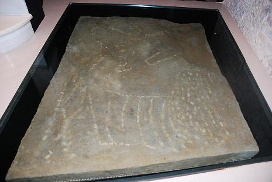 |
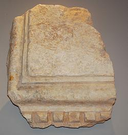 |
En junio de 2010 el
ninfeo de l´Almoina se interpreta ahora por los arqueólogos como un
santuario/sanatorio dedicado a Asklepios, el dios de la medicina de origen
griego, adoptado por los romanos en el siglo III a.e.c. El culto existiría
poco después de la fundación de Valencia en el 138 a.e.c, y el edificio se
mantendría en pie con ampliaciones y algunas modificaciones hasta la época
visigoda. Fue en 2005 cuando se descubrió una segunda piscina porticada, en
posición simétrica a la que ya se conocía y se interpretó como ninfeo.
|
Una prueba de la
importancia de Asklepios en Valentia es que es la única divinidad romana de
la que existen dos inscripciones en la ciudad. Gracias a Escolano sabemos de
una inscripción dedicada a Asklepios que desapareció en el siglo XVI y la
otra en la fachada de la Basílica de la Virgen de los Desamparados; de
Venus, Júpiter e Isis se conoce solo una. Debido a estos indicios, se cree
que debió de ser la divinidad principal y un Templo de gran relevancia en la
ciudad.
La teoría de los arqueólogos es que el santuario/sanatorio se construyó en
época republicana y las termas formarían parte del recorrido sacro, siendo
una parte del santuario. El recinto se reconstruyó y se amplió después, en
época imperial, pero sin destruir la piscina anterior. Se da la
circunstancia de que este es el único edificio que no se tocó durante la
destrucción de la ciudad en el 75 a.e.c. y que justo al lado se encontrara
una pila bautismal visigoda, lo que apunta a que el edificio fue asimilado y
aprovechado como baptisterio en los inicios del Cristianismo.
|
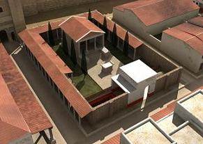 |
En diciembre de 2012
en la calle Castán Tobeñas, junto a la Modelo, investigan los restos del
acueducto romano que abastecía Valencia, datado en los siglos I-II. Parte
del acueducto también se halló también en la calle Quart nº2. Se tenía constancia
gracias a Nicolau Primitiu.
En mayo/junio de 2016,
en el museo de la Catedral de Valencia, se podrá visitar los restos del
entramado urbano de la Valencia romana, de entre los siglos I y II, además de
otras estructuras visigodas y árabes. Los restos romanos han aparecido a
tres metros de profundidad, en excavaciones localizadas bajo las capillas de
San Francisco y San José, y que se trata de tres casas romanas a lo largo de
unos 50 metros, donde se conservan sus entradas, dinteles y depósitos de
agua, así como una reja romana con hierros entrecruzados.
En febrero de 2017, un
pasadizo de época romana ha salido a la luz en el interior del Restaurante
La Moma Cova Gastronómica de València, calle Corretgeria,12. Es uno de los
siete caminos "secretos" del subsuelo que conecta con la catedral, informan
los responsables del establecimiento. El espacio que ocupa actualmente el
local era en el siglo I, una cisterna romana que en la Edad Media fue
reutilizada como silo.
En mayo de 2017,
excavaciones de la Conselleria de Hacienda, Palacio del Almirante, sacan a la luz
el mayor muro de
época romana hallado en Valencia, edificios islámicos y el antiguo trazado
de la calle Micalet. El muro de más de 2m, conserva parte de su
revestimiento de placas de mármol, éstas posiblemente de la cantera
valenciana de Buixcarró. Pertenecería a uno de los grandes edificios
monumentales que rodeaban el Foro de Valentia entre los siglos I y II. A una
profundidad de unos 4m, ha aparecido una porción de pavimento romano de
época imperial y se ha recuperado un fragmento de inscripción con letras
romanas, que forma parte del cimiento de un muro de época califal del siglo
X, que podría pertenecer, según los expertos, a una lápida honorífica que
hace referencia a los "veterani et veteres". Los visitantes podrán
ver la calle romana y su alcantarillado. Los expertos apuntan que esta calle
desembocaba en el circo romano, que llegaba desde la plaza Nápoles y Sicilia
hasta más allá de la calle de la Paz.
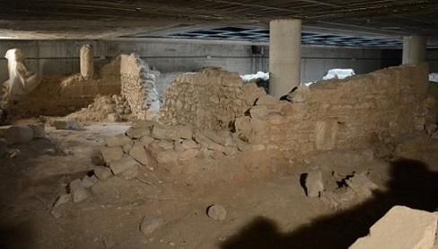
En agosto de 2017, en
la playa de la Malvarrosa, unos buceadores hallaron un ánfora romana del
siglo II.
En diciembre de
2017 las obras del Palacio Vallier, situado en el nº 7 de la plaza de
Manises, sacan a la luz restos de muros, balsas con sistemas de desagüe de
plomo, un peso procedente de una báscula romana, conocido como «pondus», pavimentos y restos de pinturas murales y numerosos fragmentos de
botellitas de vidrio de lo que las primeras hipótesis de los arqueólogos
identifican como una perfumería de época romana, en concreto, del siglo III.
Un hallazgo de gran transcendencia puesto que en Hispania no se han
encontrado evidencias arqueológicas, salvo algunos hallazgos en Elx y
Barcelona. En el Imperio Romano perfume era un artículo muy apreciado. Los
romanos lo utilizaban además para sus ofrendas a los dioses y en rituales
funerarios. Se fabricaban a partir de aceite de oliva y flores maceradas, la
más habitual, la rosa y su textura era más densa que los actuales perfumes.
También en el hueco del ascensor han descubierto un enterramiento visigodo
sin ajuar ni lápida. El enterramiento no estaría dentro de la ciudad
visigoda, más pequeña que la Valentia romana, y todavía no se sabe si es un
enterramiento aislado o una necrópolis visigoda. Foto:
Levante_emv.
En julio de 2021, los arqueólogos han
recuperado una lápida funeraria romana en la Alquería
Falcó durante los trabajos previos a la rehabilitación del edificio.
La lápida podría datarse entre los siglos II y III , incluye una inscripción
completa en latín en que una mujer, de nombre Primitiva, se despide de su
cónyuge, de nombre Hilaro, muerto a los 70 años. Se trata de la primera
inscripción completa encontrada en la última década en las excavaciones de
València. Foto:
levante-emv.com
En julio de 2021 en las excavaciones en
la Plaza de la Reina sale a la luz los restos de la muralla tardorromana.
En enero de 2024 las obras de
urbanización del PAI de la Avenida Constitución, en el que estaba el famoso
"agujero de la vergüenza" de Orriols, han sacado a la luz una necrópolis
romana con al menos cinco tumbas en buen estado de conservación.
En diciembre de 2025, en el Congreso de
Arqueología, el hallazgo de un tramo de la muralla republicana de Valentia
en 2023, cambio en los límites de la ciudad latina. Marisa Serrano,
arqueóloga de la empresa Semar, presentó en este congreso el hallazgo.
Supondría un aumento considerable de la extensión supuesta para esta primera
ciudad de Valentia. Una isla más de casas al este del trazado establecido
hasta el momento.
En diciembre de 2025, los arqueólogos,
según el tipo de sepultura, los ritos y los ajuares funerarios de hace más
de 2.100 años encontrados en València son propios de los Peligni, uno de los
pueblos más importantes de la zona de los Abruzzos, centro-sur de italia.
|